CNCing a Turret Plate
Previously, our FTC team had sent out orders to Xometry and other places offering CNC services to machine our parts. However, these were often extremely expensive, which is very hard on a school team's budget, and took a long time to get parts delivered back to us. Because of this, starting this season, our team planned on fabricating our own custom parts. With this, I became in charge of machining parts for our team: the first part I decided to take up was an aluminum turret plate. This turret plate would be used to hold up the turret (shooter) mechanism of our robot; the plate will keep the turret steady on the robot while preserving the robot's structural identity. I had to do this on an 8mm aluminium plate. I had experience with 6mm polycarbonate milling, so I decided that it would be a good place to start.
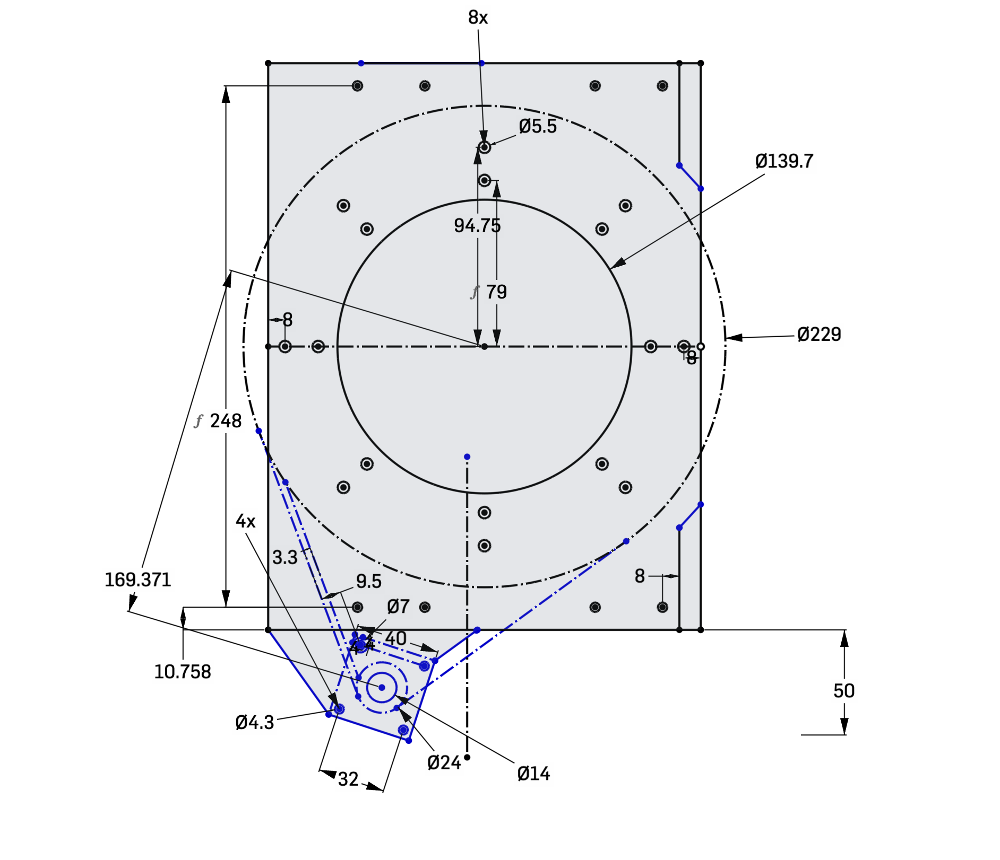
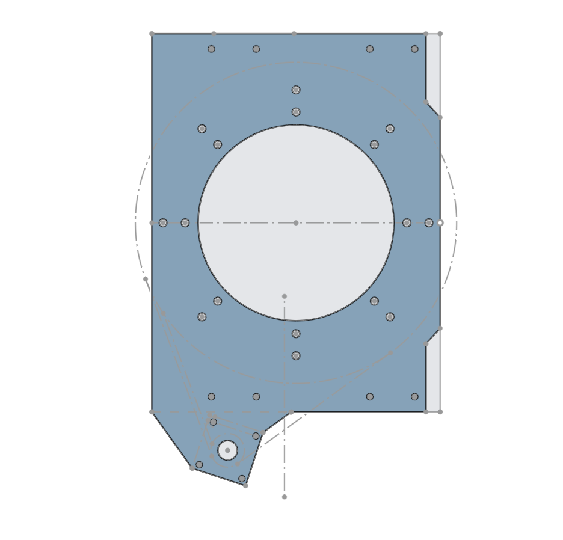
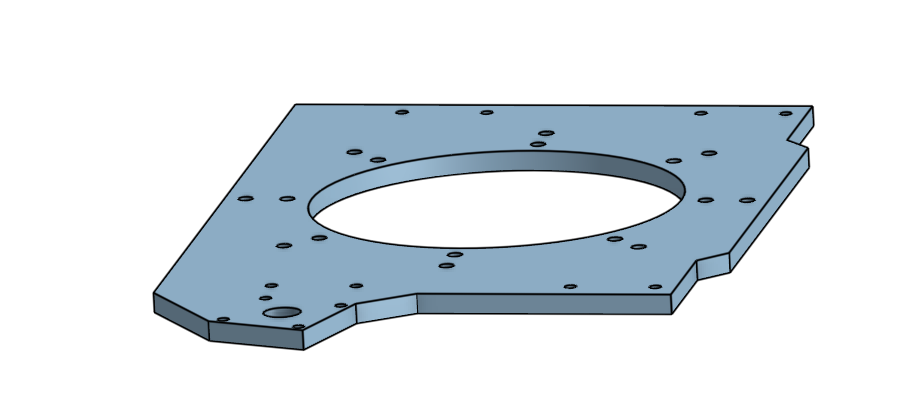
Before beginning to CNC the aluminum plate, I started by practicing on a wood plate. I started by milling my own name as a refresher on the different parameters required to CNC a piece (ex. feed rate, step down, etc).
After practicing CNC machining with a wood piece, I began researching techniques on how to machine aluminum. Through research from Sienci Lab, I found ideal speed and feeds for machining, which I reduced slightly to my machine's (Lunyee Pro 4040 50w spindle) capabilities, as well as the fact that in order to make the machining most effective it would help to use a coolant to cool the metal and reduce friction after the bit passes through an area (I decided to use water as a replacement for standard coolant).
Speeds and feeds chart from Sienci Lab:
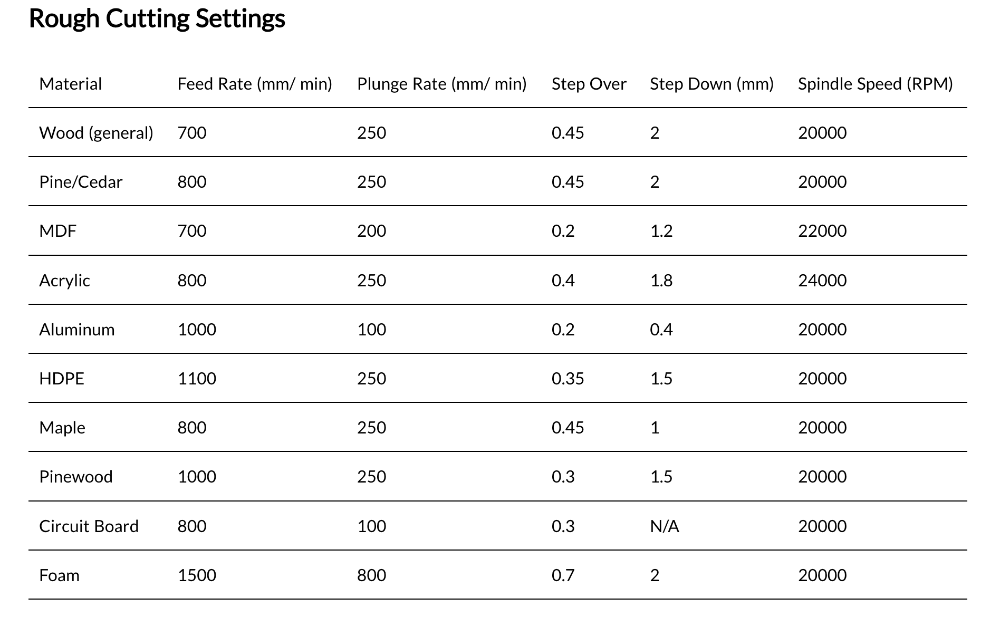
Before cutting the aluminum piece, I had to first convert the CAD of the turret plate into something readable by the CNC machine, in other words convert it to Gcode. To do this, I used the Onshape Kiri:moto extension which can do this with my input of the different feeds and speeds.
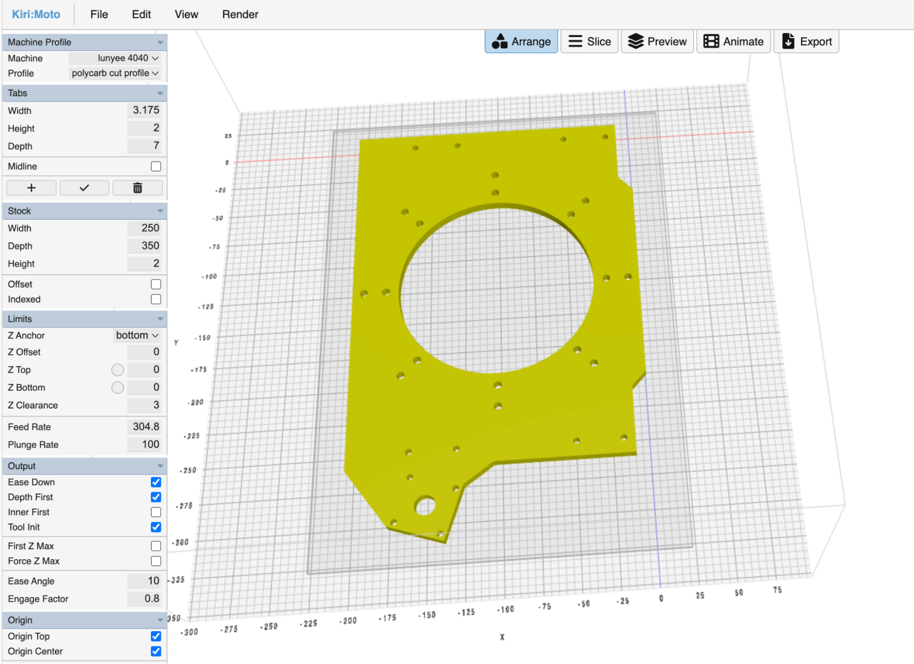
To cut the aluminum I used the spindle bit Upcut 50.8*25.4mm*0.25*0.25.
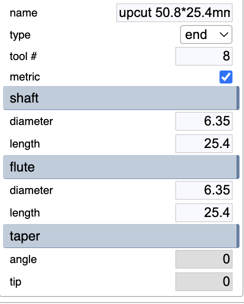
Along with this I used the following feeds and speeds:
- Spindle RPM: 11500 rpm
- Feed Rate: 30 mm/rev
- Plunge Rate: 20 mm/sec
- Step Down: 0.5 mm
- Step Over: 0.45 mm
Once I began cutting the aluminum piece I ran into a problem: the spindle bits kept on breaking after machining small portions of the turret plate.
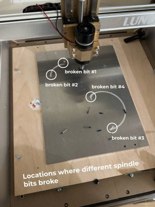
To solve this issue, I began iterating between different feed rates, spindle speeds, and step down distances. The main reason why the spindle's bits kept breaking was that there was too much of a load on the spindle when it tried to cut through the aluminum. By decreasing the step down (the distance that the bit moves down after every pass), decreasing the feed rate (how fast the bit moves while machining), and increasing the spindle speed will make it so that for the same distance the machine will require much less force to cut, making it so the load on the spindle bit is much lighter than before. However even after continuing to do this the bit continued to break. To solve this I switched to a more powerful motor and bits. Although this worked much better than the previous solution, it ended up breaking down when in the end stretch after 4 hours of machining and still the plate couldn't be used. After much deliberation, I came to the decision that attempting to cut the aluminum for longer would only end up becoming a waste of materials and time, as I did not have the resources to cut aluminum that may be used in professional settings (our machine was originally intended for engraving in wood, I didn't have a proper coolant, etc). Instead, I came to the decision to switch to another material. The final product for this cut is the following (because the machine broke down the aluminum isn't cut fully and therefore cannot be separated from the rest of the aluminum plate):

After failures with machining aluminum we switched to Delrin polycarbonate. Previously, I have used this material for many uses in VEX robotics so I believed that this may end up working well. Using feeds and speeds, I had gotten from previous times cutting polycarbonate, I began cutting the plate.
To cut the polycarbonate I used a different spindle bit: HQMaster Spiral Uncut Bit.
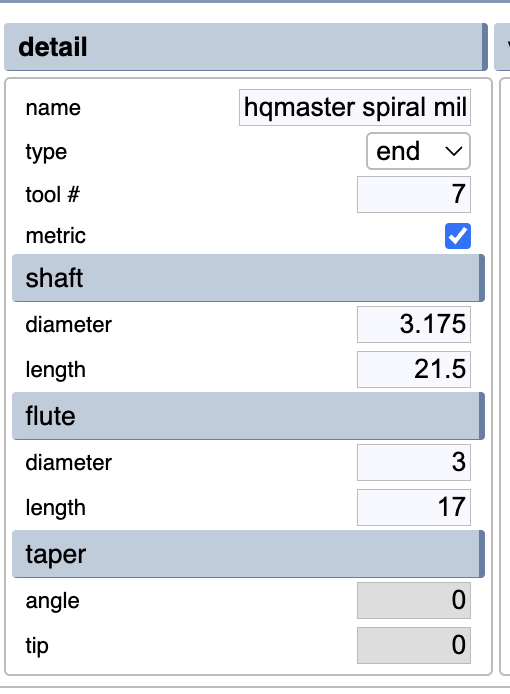
Along with this I used the following feeds and speeds:
- Spindle RPM: 10000 rpm
- Feed Rate: 50 mm/rev
- Plunge Rate: 20 mm/sec
- Step Down: 1 mm (increased because polycarbonate is easier to cut)
- Step Over: 0.45 mm
The polycarbonate plate cut without the hardships that had come while cutting the turret plate in aluminum. The final product for the polycarbonate plate is the following:
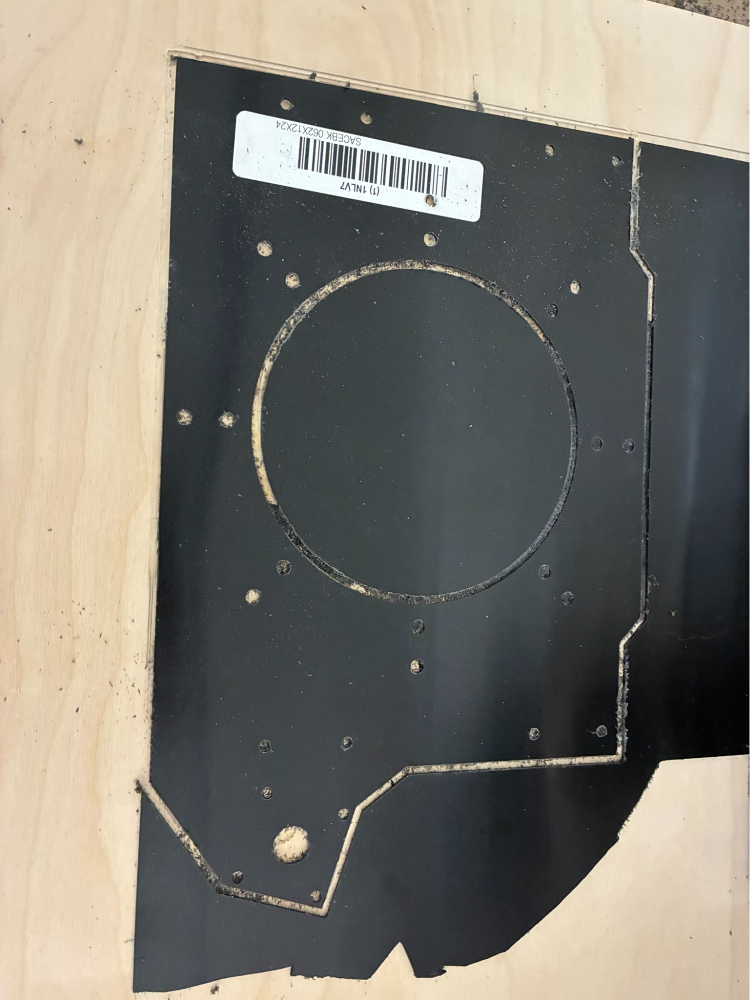
After cutting the piece I stress tested the piece and came across a problem: previously for VEX I had used this polycarbonate for small pieces which came out as sturdy, however because of the larger size of the turret plate, the resulting piece ended up bending when force was applied. Because this piece was going to be used as a structural piece holding up a heavy turret, this would end up being detrimental to our robot in the long term as it may cause inaccuracy in shooting and may break very easily.
With sturdiness in mind, I decided to search for another material to use. After much thought I landed on wood. However there were so many different types of wood and I had to decide which one would work best for us. To narrow it down I decided to choose between MDF, plywoods, and solid woods
| Pros | Cons | |
|---|---|---|
| MDF (Medium-Density Fiberboard) | Very smooth, doesn't splinter while machining, highly cost effective (cheap) | Sags under heavy weights, absorbs moisture and causes swelling |
| Plywood | Structurally strong, stiff, highly resistant to warping, grips screws exceptionally well, relatively lightweight. | Has layered edges, more expensive than MDF, splinters more easily |
| Solid Wood | Has more aesthetics, higher durability | Most expensive option, expands and contracts based on humidity, susceptible to warping |
After looking through the pros and cons of the different options I decided to go with 0.25 inch thick MDF because it matches my requirements the most as it is cost effective and requires less work to smoothen, while its cons isn't as harmful as the heavy weights needed for it to sag are much higher than needed for robotics (15+ lbs) and it will not be exposed to moisture as that would also harm the robot's electronics.
After deciding to use MDF, I researched tips and tricks to cutting MDF. I realized that like polycarbonate, cutting MDF doesn't require coolants and is much more straightforward than cutting aluminum. So after finding the ideal feeds and speeds for MDF and adjusting it to fit my machine's capabilities, I began to machine the MDF plank.
To cut the MDF I used the same spindle bit as used for cutting the polycarbonate: HQMaster Spiral Uncut Bit.
Along with this I used the following feeds and speeds:
- Spindle RPM: 10000 rpm
- Feed Rate: 70 mm/rev (increased because MDF is easiest to cut of the 3)
- Plunge Rate: 20 mm/sec
- Step Down: 1.5 mm (increased because MDF is easiest to cut of the 3)
- Step Over: 0.45 mm
As our machine was originally intended for machining wood, the machining process was fairly straight forward and went smoothly. After cutting the plate, I tested the plate for its durability and found it much more sturdy than the polycarbonate plate. The final product of the MDF plate is:

After checking its strength, I passed the plate back to the team. Back at the team's meeting spot we also decided to coat the plate for water protection as an extra precaution and spray paint it to match the robot's aesthetic. After adding the finishing touches to the plate we incorporated it into the robot.
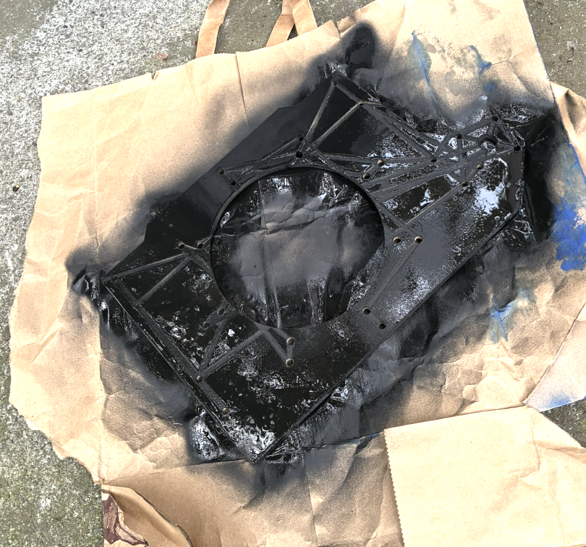
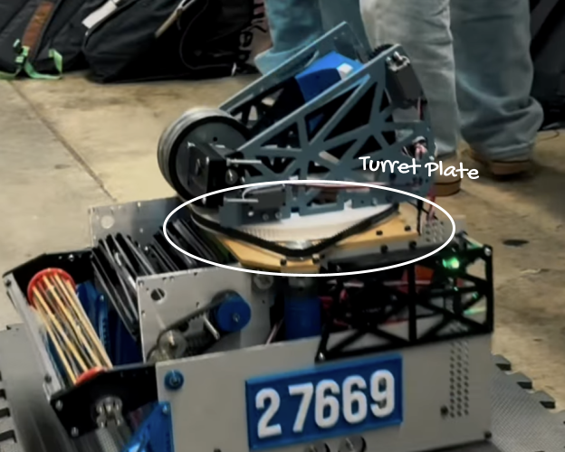
Takeaways from this project
Through this project I learnt about various aspects of CNC machining that had previously been unknown to me. I learnt not only about the aspects of cutting aluminum, polycarb, and MDF, but also how to iterate between different feeds and speeds to reduce load while maintaining the machines efficiency.